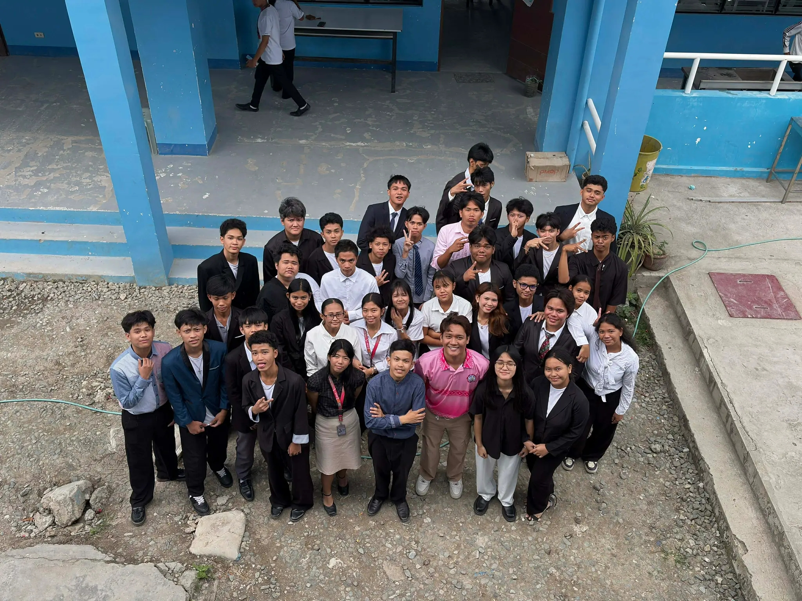
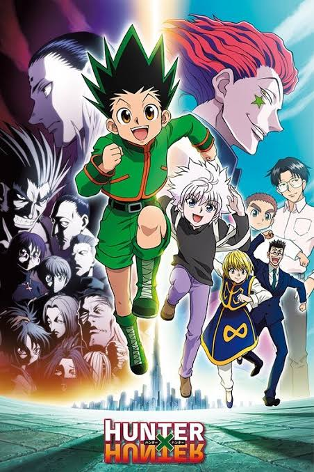

About me

I want to be It Or Game developer, I'm so happy because I learned to code and learning things I couldn't do before. I'm grateful to our teacher because he helped us so that we could do this. And because of what we learned from coding, we were able to use that to create a website for our defense.

Hunter X Hunter is my favorite anime, I have so much fun every time I watch this anime, it never gets boring even after watching it repeatedly, my favorite character hunter x hunter is Killua Zoldyck because of his lightning power. I play 2 online game it is Mobile legend and Call of duty mobile, I play this game for fun or to pass the time, I also make Highlights in mobile legends and Call of duty, And i post it in my tiktok account.
I play 2 online game it is Mobile legend and Call of duty mobile, I play this game for fun or to pass the time, I also make Highlights in mobile legends and Call of duty, And i post it in my tiktok account.